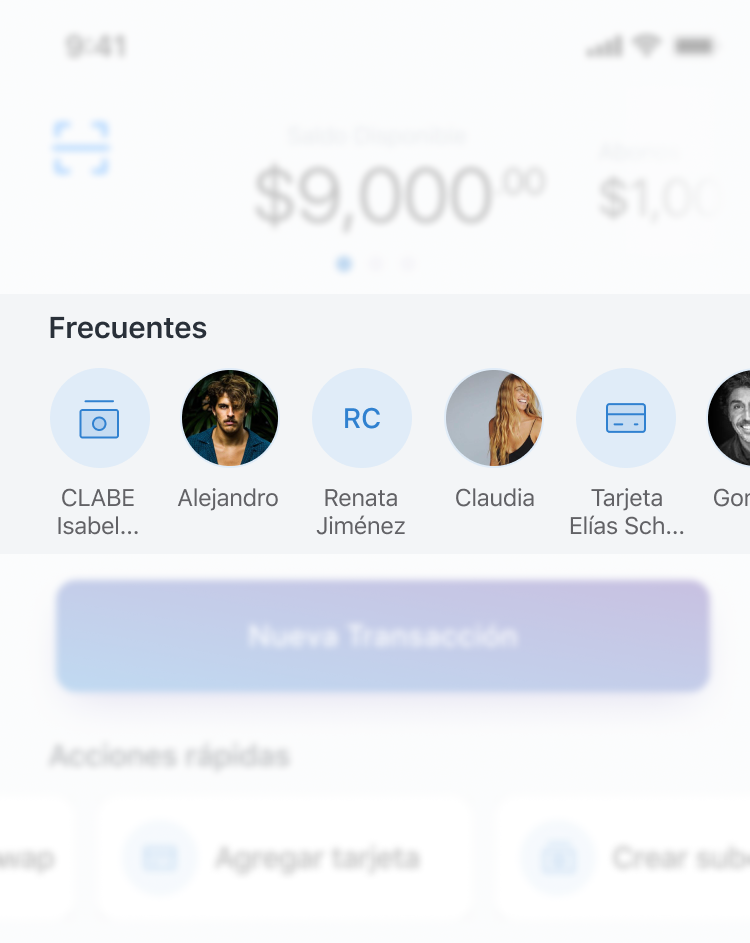

HOW A COMPLIANCE TASK TURNED INTO A WHOLE FEATURE IMPROVEMENT
HOW A COMPLIANCE TASK TURNED INTO A WHOLE FEATURE IMPROVEMENT
Lesson learned: Challenges come with plenty limitations, it is about what you do with them to perform an amazing outcome.
Swap had to meet certain needs in the payment process to be regulated by the CNBV (the institution who issued the licenses to all the mexican fintechs), many of them related with the payment process. These needs were mandatory (but kept certain room for interpretation, and therefore, to do some magic).
This is how a simple task list had the opportunity to become something more interesting for the business and the users.
The compliance was related with several changes in the payments flow and, therefore, this was the opportunity to review the process in order to improve it.
SPEI: the engine that processes all the interbank payments in Mexico, the only and almighty one.
Since the beginning of times using SPEI to do payments between different banks has been an awful experience, some hard numbers that showed up in the benchmark:
AVERAGE INDUSTRY TIME: (benchmark done with 8 mexican banks): +1 minute
WORST TIME
Banorte (+30 minutes! Mainly because of the “need” to register the bank account. All the other banks got rid, somehow, of this “feature” at least one year ago.
BEST TIME:
BBVA -+ 1 minute
(The main issue was copying manually de CLABE number between apps because, at least in iOS, there wasn’t a way to copy/pasting it, incredible right? It was an input without the basic attributes of an input. Like when an input to write down 6 numbers appears but the keyboard popping up is a regular QWERTY one instead a number pad.)This benchmark was done somewhere half of 2019, hopefully all of these issues had been addressed properly.
I was looking to improve the payment experience to outstand all the competition and become a facilitator of a very difficult process (well, if you have to pay it is always difficult to say goodbye to your well earned cash).
The main reason of these improvement was to become a differentiator with the most used feature.
We expected the user to be quite comfort with the payment process and become the number one alternative vs. other major banks (yes, the once mentioned before in the benchmark).
But wait: how are we going to become the number one payment possibility if the users had plenty other banks? Well, that was easy taking advantage of one of the mains features of Swap: being a wallet.
This (being a wallet) means people can “add” credit and debit cards from any mexican bank to their account and do payments straight from them.
When this improvement started I was working as a Product Manager + Product Designer (yeah, it was a lot of work but I wanted to taste the beautyness of both worlds). It was a solo adventure; I was the only designer involved).
I worked alongside the main stakeholders, these being: marketing (also a combination between marketing and data analyst), the CEO and the developers (the all mighty techie guys as we call them), the client support manager and also once in a while a chat with legal was necessary as there are always doubts about what you can and can’t say in this well regulated industry (I mention this last one because plenty of fintechs had been fined with good amounts of money (up to $9M MXN) just because one single word was used wrongly, so extra precaution has been implemented since then.
The first approach I took was having a meet with my number’s master (which is my marketing/data science manager) to review the funnel and get some general insights about the process.
The manager of the Support team was key as they have a top 10 most received issues, plenty of them were related, directly or indirectly, with payments.
Also it was the opportunity to review my good ol’ improvements annotations notebook. This one contains several improvements talked here and there with random meets, chats, emails, thoughts, workshops, etc. with every member of the team since I started at Swap.
Next step was doing some field tests with heavy Swap users to obtain ‘real world’ insights.
How we were going to measure success?:
| Definition | Metric |
|---|---|
| 1. Successful Payments | # drop outs |
| 2. Less failed payments | # failed payments |
| 3. Less support contact regarding payments | #payments hashtag |
| 4. Saved contacts vs. new transactions (from zero) | TXs comparision |
| 5. Shortcuts payments vs. New Payments | TXs comparision |
As the project got more complex, we had the need to redefine what we wanted to accomplish:
We where going to get it with the next solutions:
The original user journey for a payment was:
– There weren’t a way to create frequent contacts (although it was the 2nd more frequent transaction type, only behind new transaction).
The proposed journey merged both worlds: new transaction and new frequent contact.
Contextually:
– 95% of the time a user had the need to add a frequent user were in the flow of creating a new payment for this same user.
The journey evolved to:
Results:
The total number of steps decreased by 30% but time, the real metric here, were reduced by 60%.
These were all the improvements the team worked on:
INSTANT FOR THE FREQUENT
What is it: Top recurrent payments as a shortcut in the main dashbaord (either if they were Swap users, credit/debit cards or CLABE numbers.
Basis: Payments was the main action a user did (95% of interactions were payments), heavy users (the beloved ones by Swap) did frequent payments to the same user (up to 7 per month) and they had to do each of them from scratch (there was no way of saving a user nor to re do payments).
Metrics used:(1 month time span)
| Metric | Before | After | Difference |
|---|---|---|---|
| CSAT (recurrent payment) | 3.5 | 4.2 | +0.7 (+20%) |
| User actions per session | 15 | 9.5 | -5.5 (-36%) |
| Session duration | 2:30 min | 1:28 min | -1:02 min (-41%) |
| Bounce rate | 15% | 12% | -3% (-20%) |
In the history of transactions, while consulting a specific one a ‘re do’ button will appear to create a new identical transaction, considering the chance of changing the money amount to be payed.
In the main dashboard it would appear a short version of this ‘txs history’ as consulting a transaction is the 2nd most used feature.
Creating a new money receiver:
I. Built within the ‘new payment’ flow, this would tackle 2 birds with one shot:
a) The regulation needed the full name of the destinatary.
b) The option to add a new user (contextually)
II. This flow could also be accessed straight from the ‘new payment’ screen.

Whenever the user arrived to Swap with a credit/debit card or CLABE number in the clipboard a shortcut would pop out to let the user send money to this destinatary.

In order to top up the user’s balance a simple click to the balance will be enough to show the different options available.
- For new users, as this interaction has no visual cues or previous interaction knowledge, a micro tutorial was mandatory to discover it.
- As a second option a CTA to ‘top up’ will appear next to the balance.

The main notification (primarily to get the main attention in the dashboard, was redesigned to achieve this need of being above everything else. Mostly used for promotions or temporal announces related with the user’s account.